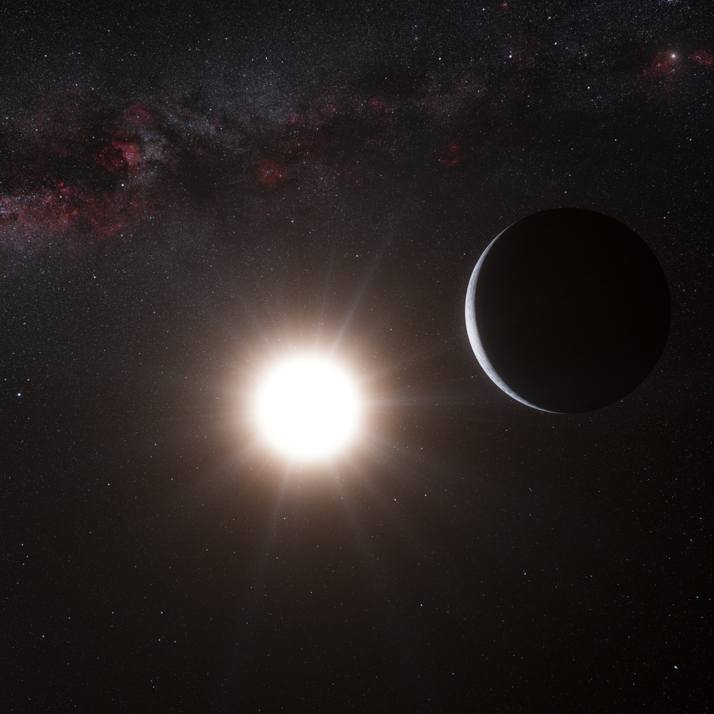

Солнце
Разумеется, наша родная звезда по имени Солнце известна каждому. В действительности, это единственное светило в Солнечной системе. Более того, вокруг него вращаются объекты, которые входят в нашу систему, в том числе и Земля. Собственно говоря, Солнце представляет собой жёлтый карлик. А благодаря его излучению и свету существует жизнь на нашей планете. Но что важно, в астрономии по Солнцу характеризуют и описывают другие небесные тела. Например, по его радиусу и массе, а также светимости. Следовательно, необходимо знать солнечные характеристики. Итак, радиус главной звезды равен 695,5 тысяч километров, а масса составляет 1,9891*10³⁰ кг или 332,982 масс Земли. подробнееСириус
Сириус — это самая яркая звезда на ночном небе. Она находится в 8,6 световых годах от Земли и состоит из двух звезд: Сириуса A (бело-голубая, большая и горячая) и Сириуса B (маленький, тусклый белый карлик). Сириус A примерно в 2 раза тяжелее Солнца и светит в 25 раз ярче. Его поверхность очень горячая — около 10 000 градусов. Когда-то Сириус B тоже был большой звездой, но со временем сжался. Сириус движется ближе к Земле, поэтому через тысячи лет он будет еще ярче. В древности его использовали для предсказания разливов Нила, а еще с ним связывали жаркие летние дни. подробнееПроксима Центавра
Проксима Центавра — это самая близкая к нам звезда после Солнца, она находится всего в 4,24 световых года от Земли. Это красный карлик, маленькая и тусклая звезда, светящая в 17 000 раз слабее Солнца. Ее масса примерно в 8 раз меньше солнечной, а температура поверхности — около 3 000 градусов (в 2 раза холоднее Солнца). У Проксимы есть как минимум одна планета, похожая на Землю — Проксима b, которая может находиться в зоне, пригодной для жизни. Однако сама звезда часто выпускает мощные вспышки, что делает условия на планете сложными. подробнее

Альфа Центавра
Альфа Центавра — это ближайшая к нам звездная система, находящаяся в 4,37 светового года от Земли. Она состоит из трех звезд: Альфа Центавра A и Альфа Центавра B (две похожие на Солнце звезды, вращающиеся друг вокруг друга) и Проксима Центавра — тусклого красного карлика, который является самой близкой к нам звездой. У Проксимы Центавра есть планета, похожая на Землю, которая находится в зоне, где может быть жидкая вода. Альфа Центавра часто рассматривается как возможная цель для будущих космических путешествий, потому что это самая близкая к нам звездная система. подробнее
Канопус
Канопус
Канопус — вторая по яркости звезда на ночном небе после Сириуса. Она находится примерно в 310 световых годах от Земли в созвездии Киля. Это жёлто-белый сверхгигант, который светит в 10 000 раз ярче Солнца и в 70 раз больше его по размеру. Температура на его поверхности около 7 500°C. Канопус часто использовался в навигации, особенно моряками и космическими аппаратами, так как он очень заметен в южном полушарии. В будущем он станет белым карликом, когда исчерпает свое топливо. подробнееАрктур
Арктур — одна из самых ярких звезд на небе, находится в созвездии Волопаса и светит оранжево-красным светом. Он расположен примерно в 37 световых годах от Земли. Арктур — красный гигант, который раньше был похож на наше Солнце, но теперь расширился и стал намного больше — его диаметр в 25 раз больше солнечного. Он светит в 170 раз ярче Солнца, хотя его температура ниже — около 4 300°C. Арктур постепенно сжигает свое топливо и в будущем станет белым карликом. В древности его использовали для навигации, а на некоторых Олимпийских играх его свет даже зажигал огонь соревнований. подробнееВега
Вега — одна из самых ярких звезд на небе, находится в созвездии Лиры и расположена примерно в 25 световых годах от Земли. Она светит голубовато-белым светом и примерно в 40 раз ярче Солнца. Вега молодая звезда, ей около 450 миллионов лет, и она вращается очень быстро, из-за чего слегка сплюснута. В прошлом Вега была Полярной звездой, и через тысячи лет снова ею станет из-за смещения земной оси. Вокруг нее обнаружены пылевые диски, что может указывать на формирование планет. Это одна из самых изученных звезд, так как служит важной точкой отсчета для астрономов. подробнееАльдебаран
Альдебаран — яркая оранжевая звезда в созвездии Тельца, расположенная примерно в 65 световых годах от Земли. Это красный гигант, который раньше был похож на Солнце, но со временем увеличился в 45 раз и стал светить в 400 раз ярче. Его поверхность холоднее солнечной — около 3 900°C. Альдебаран часто называют «глазом Тельца», так как он выглядит как глаз фигуры быка на небе. У него есть экзопланета, которая, возможно, похожа на газовый гигант. В будущем Альдебаран сбросит внешние слои и станет белым карликом. подробнееБетельгейзе
Бетельгейзе — огромная красная звезда в созвездии Ориона, расположенная примерно в 550 световых годах от Земли. Это красный сверхгигант, который в 900 раз больше Солнца и светит в 100 000 раз ярче. Его температура около 3 500°C, что делает его холоднее, чем наше Солнце. Бетельгейзе постепенно теряет массу и в будущем взорвется как сверхновая, осветив небо на несколько недель. Недавно ученые заметили, что звезда потускнела, что может быть признаком ее нестабильности. Если она взорвется, это будет одно из самых ярких астрономических событий, но для Земли оно не представляет опасности. подробнееРигель
Ригель — самая яркая звезда в созвездии Ориона и одна из самых ярких на ночном небе. Она находится примерно в 860 световых годах от Земли. Ригель — это голубой сверхгигант, который светит в 120 000 раз ярче Солнца и в 70 раз больше его по размеру. Его поверхность очень горячая — около 12 000°C, поэтому он светится ярко-голубым цветом. В будущем Ригель взорвется как сверхновая и может оставить после себя нейтронную звезду или черную дыру. Сейчас ученые изучают его, так как он находится на поздних стадиях своей жизни и может стать одной из ближайших к нам сверхновых. подробнее
Поллукс
Поллукс — самая яркая звезда в созвездии Близнецов, расположенная примерно в 34 световых годах от Земли. Это оранжевый гигант, который больше и холоднее Солнца: его диаметр в 9 раз больше, а температура составляет около 4 600°C. Поллукс светит в 30 раз ярче Солнца и уже находится на стадии старения. У этой звезды есть экзопланета Поллукс b, которая примерно в 2 раза больше Юпитера. Поллукс — одна из самых заметных звезд на небе и часто используется астрономами для изучения эволюции звезд. подробнееR136a1
R136a1 — одна из самых массивных и ярких известных звезд во Вселенной. Она находится примерно в 160 000 световых годах от Земли в галактике Большое Магелланово Облако, внутри звездного скопления R136. Эта звезда в около 250 раз массивнее Солнца и светит в 8 миллионов раз ярче. Ее поверхность очень горячая — около 53 000°C, из-за чего она светится ярко-голубым цветом. R136a1 теряет огромное количество массы из-за сильных звездных ветров и в будущем, скорее всего, взорвется как гиперновая, оставив после себя черную дыру. подробнее